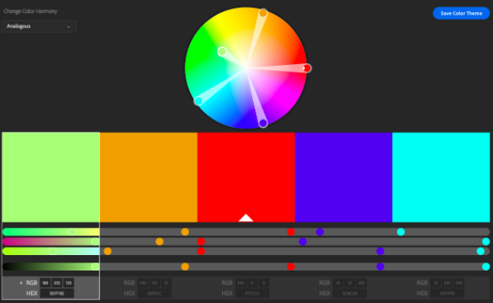

- PROGRAMAÇÃO TUTORIAIS
junho 19, 2018
-

5min de leitura
-

Ariane G.
Como ser um Desenvolvedor Web: Por onde começar?
Se você está buscando como ser um desenvolvedor web e investir nessa carreira, fez uma ótima escolha, nós vamos te dar os primeiros passos. Essa é uma das áreas mais bem pagas para quem está apenas começando sua carreira. Então, se o seu desejo é de construir um site ou começar sua jornada como um desenvolvedor de sucesso, precisa começar de algum lugar.
A área de desenvolvimento é muito ampla, então antes de começar a pesquisar como ser um desenvolvedor, é uma boa ideia ter uma meta em mente.
Suas metas podem variar desde mudar o rumo da sua carreira até abrir uma loja virtual. Ou até mesmo desenvolver para amigos ou somente por diversão. Seja qual for sua meta, tenha certeza de que você entende o que está fazendo e porque está fazendo. Desenvolvimento Web consiste e diversos ramos menores de atuação, e por isso ter uma meta clara vai te ajudar a decidir o que você deve aprender primeiro e o que você pode pular.
Um ótimo ponto de partida seriam plataformas de aprendizado online, como o BitDegree, que oferece uma grande variedade de cursos criados especificamente para quem busca como ser um desenvolvedor web. Mas o mais recomendado é começar ainda antes, escolher entre desenvolvimento back-end ou front-end.
Conteúdo
Como se tornar um desenvolvedor Front-end
Front-end — consiste em tudo que o usuário vê. O design do site, menus, botões de interação e imagens que criam a experiência do usuário. Por isso é chamado de front-end. É como a frente de sua loja, e o que seu usuário vê ao entrar nela.
Desenvolvedores front-end são visualmente criativos e possuem excelentes habilidades de design. Porém, é mais do que somente fazer um site ter uma boa aparência. Eles também pensam em todas as interações, facilidade e conforto de navegação. O arsenal de um desenvolvedor front-end consiste em HTML, CSS e JavaScript.
Em comparação, desenvolvedores back-end escrevem códigos que não são vistos pelos usuários. Geralmente envolve trabalhar na melhoria das funcionalidades de um sistema, APIs, bibliotecas ou similares. Em termos simples, desenvolvimento back-end significa trabalhar com códigos que não são vistos diretamente.
HTML & CSS
HTML é usado para representar conteúdos diversos como parágrafos de texto, títulos, tabelas. Considerada como uma das linguagens mais simples de ser aprendida, é um excelente ponto de partida para todo desenvolvedor. Independente da sua área de atuação, HTML faz parte da lista de coisas que todo profissional precisa saber. O CSS é utilizado para customizar o material criado com o HTML. Imagine que o seu site é uma lata de sopa. O HTML é a sopa e o texto do rótulo, enquanto o CSS é o design e o layout.
O melhor lugar para aprender HTML e CSS é o BitDegree, onde você encontra um curso interativo de HTML e CSS. Toda a programação é feita no próprio navegador, então não é necessário baixar nenhum programa adicional. Ao final do curso, que dura de um a dois dias, você terá criado um site básico em HTML.
JavaScript
Depois que você já tiver uma boa noção de CSS e HTML, é hora de aprender o JavaScript. Ele é utilizado para deixar o site mais “vivo”. JS é importante de ser aprendido porque as empresas estão focando em criar sites dinâmicos e interativos.
JavaScript permite que o site possua funcionalidades interativas. Botões de curtir do Facebook, retweets do Twitter, e vários formulários funcionam com JavaScript. Ele fornece ao usuário uma representação visual de suas ações, e ajudam os desenvolvedores a catalogar o que os usuários estão clicando.
Você também pode começar sua jornada com JavaScript na BitDegree. O vídeo-tutorial de JavaScript: Aprenda JavaScript em Apenas 1 Hora cobre o básico de JS em meros 60 minutos. Claro que em uma hora você não irá dominar completamente a linguagem, mas é um ótimo começo!
Como se tornar um desenvolvedor Back-end
Backend é geralmente associado com bancos de dados. O back-end do site é como a sala de estoque de uma loja, que não é visível aos usuários. Mas é uma parte essencial da loja. Desenvolvedores de back- end são normalmente resolvedores de problemas, que incorporam pensamento lógico em suas tarefas diárias, e são mais interessados na funcionalidade de um site do que na aparência. Desenvolvedores back- end usam linguagens de servidor, como o PHP e SQL. Sendo que um conhecimento básico de HTML e CSS é necessário para apresentar qualquer dado de forma visual.
SQL
Se o seu site coleta qualquer tipo de informação do usuário, como endereço de email, nome, sobrenome, etc, você precisa armazenar essas informações em um banco de dados. SQL é usado dentro do banco de dados para filtrar, adicionar, remover, ou mesclar informações. Retornando ao exemplo da loja, imagine que a sala de estoque seja o banco de dados. Ela é gigante, mas felizmente você tem um funcionário que conhece todos os itens que estão ali. Porém, ele fala apenas a linguagem SQL. Então, para fazer perguntas ou dar instruções você também terá que usar linguagem SQL.
Onde aprender SQL? Online, é claro. Você pode começar sua jornada SQL com o Curso interativo: Aprenda Comandos SQL e Pratique Online . Toda a programação é feita pelo navegador, em um ritmo muito bom de se aprender. Esse curso é suficiente para deixar você pronto para o primeiro projeto.
PHP
Para tornar seu site mais funcional, você utiliza o PHP. Essa linguagem de programação é excelente no que se trata de comunicação entre o site e bancos de dados. Se você já usou algum formulário de login, é provável que tenha sido criado em PHP. Quando você digita os dados de login no navegador, o PHP faz a verificação com o banco de dados se as informações estão corretas. Caso sim, seu login é realizado com sucesso. Para aprender PHP, é recomendado o curso online: Explicando o Básico do PHP em um Tutorial Interativo.
Os melhores cursos possuem ambientes de aprendizado interativos. Assim, você já poderá começar a programar no início, sem a necessidade de criar um ambiente de desenvolvimento no seu computador. Programar, testar, e ver uma representação visual de seu código é um grande incentivador. Tendo dito isso, você está no caminho certo para se tornar um desenvolvedor web, parabéns! Escolha entre front-end e back-end e comece a aprender as linguagens associadas.
Ferramentas de Desenvolvimento Extras
Algumas ferramentas que valem a pena ser consideradas ao trabalhar com front-end são GitHub e Adobe Colors. O Adobe Colors permite que você escolha a partir de uma variedade de temas de cores pré- definidos, que torna o processo de design mais gerenciável.

Você também pode usar a ferramenta color wheel caso precise de um código HEX para uma cor específica. Códigos HEX são usados na programação com CSS, e cada código representa uma cor única. A color wheel também pode ser usada para criar temas de cores, é uma ótima ferramenta para obter inspiração.
Também é recomendado que desenvolvedores de front e back-end se familiarizem com o GitHub. Essa ferramenta permite que desenvolvedores façam alterações em seus sites sem afetar o código original. Ela funciona fazendo a separação de seu código em dois locais diferentes e editando somente a parte clonada, permitindo que seja pré- visualizada antes de ser colocada no ar.
O GitHub também oferece uma ampla variedade de ferramentas. A habilidade de criar tarefas, designar membros, e controlar detalhadamente seus produtos. A maioria dos ambientes de trabalho utilizam o GitHub, e muitos empregadores podem solicitar sua conta do GitHub para melhor entender seu processo de raciocínio e o motivo ou a maneira de você estar implementando mudanças. Quando você precisa trabalhar em equipe, o GitHub se torna uma ferramenta essencial. Você pode entender mais sobre o GitHub no vídeo criado por eles:
Conclusão
Existem muitas linguagens que quem busca como ser um desenvolvedor precisará masterizar, independente se você planeja começar como front ou back-end. Porém, existem plataformas de aprendizado online que podem te ajudar nessa longa caminhada. Na realidade, é até comum que os melhores desenvolvedores não possuam educação formal, ou seja, se você quer saber como se tornar um desenvolvedor web, a internet oferece recursos gratuitos para começar esta jornada.
O melhor lugar para começar seria com HTML e CSS, já que você precisa entendê-los, independente se você é um desenvolvedor de front-end ou back-end. E, então, busque especializar em outras linguagens. Será muito mais fácil depois que você entender as regras gerais e melhores práticas de programação. Boa sorte a todos os futuros desenvolvedores!